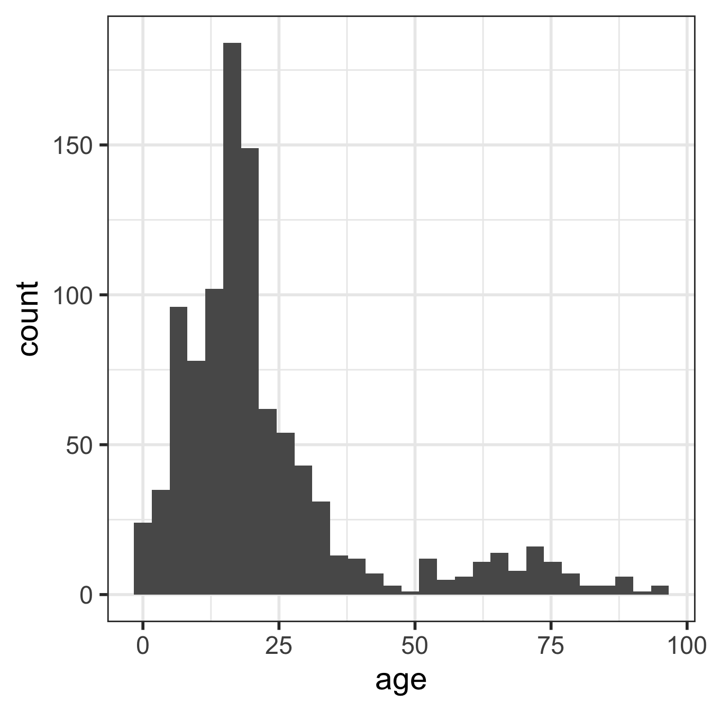
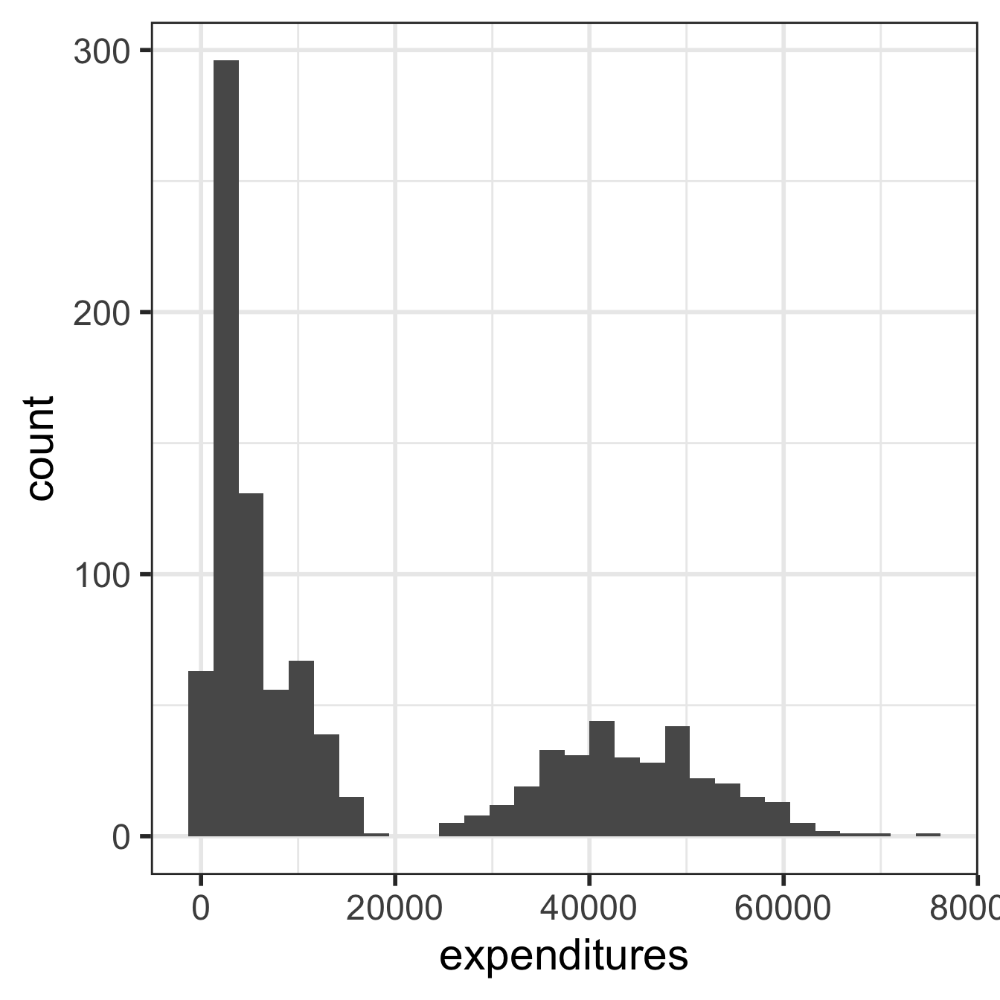
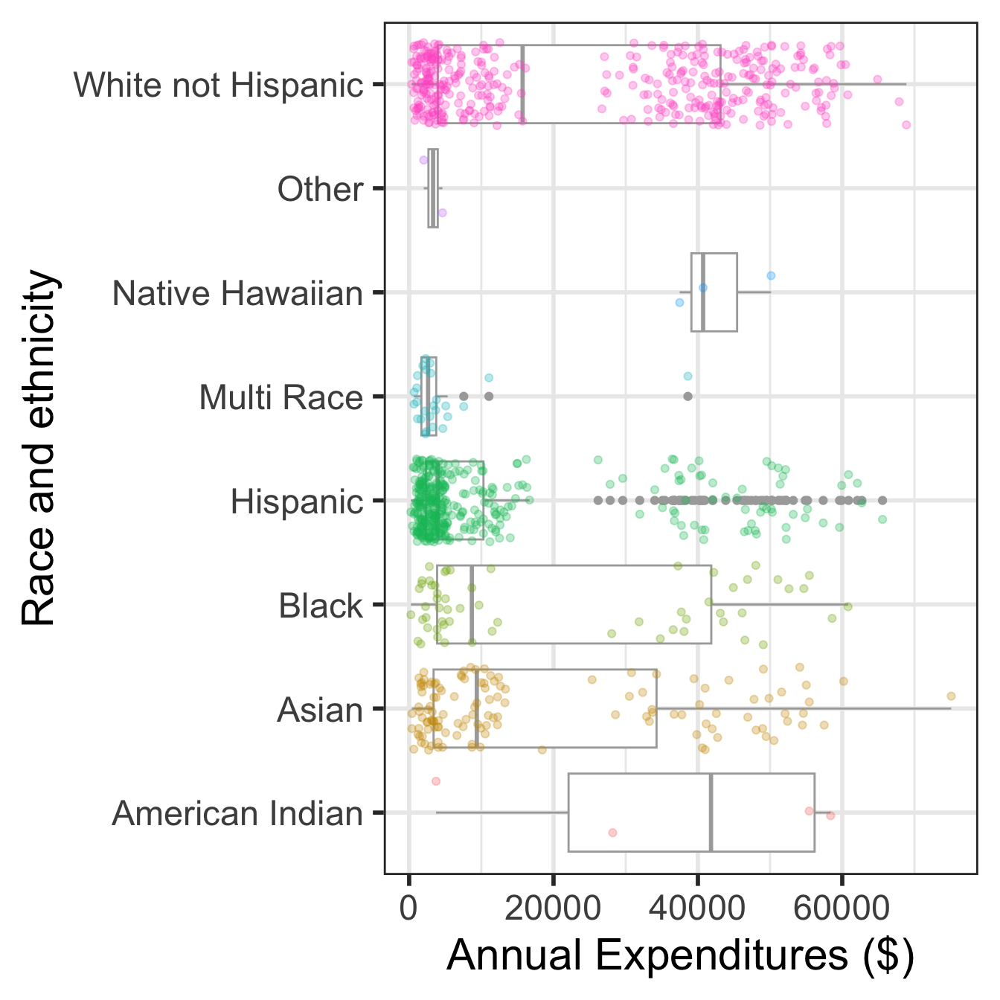
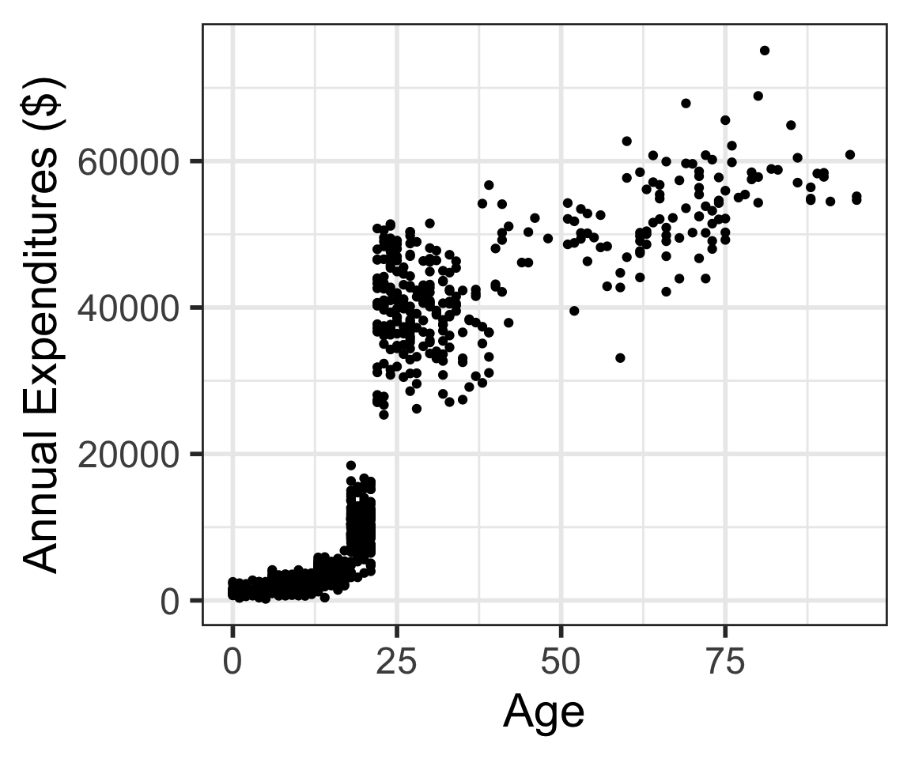

install.packages("devtools")
devtools::install_github("OI-Biostat/oi_biostat_data", force = TRUE)Lesson 3: Data visualization
Week 2
Goals for today
- Exploratory Data Analysis (EDA) (Sections 1.4, 1.5, 1.6, 1.7.1)
- Data visualization with ggplot
- numerical & categorical variables, and relationships between variables
- Summarizing numerical data
- Frequency (two-way) tables
- Data visualization with ggplot
- Some data wrangling techniques along the way
International Day of Women in Statistics and Data Science
Tuesday, October 10, 2022
12 am - 11:59 pm UTC (5pm 10/9 to 4:59 pm 10/10 here)
Mimi’s tip of the day: sending messages in Slack
Are you frustrated that Slack sends a message when you press Enter? You can change that!


Recap of last time
- (1.3) Data collection principles
- Population vs. sample
- Sampling methods
- Experiments vs. Observational studies
- (1.2) Intro to Data
- Data types
- Numerical: discrete (integer in R), continuous (double or numeric in R)
- Categorical: ordinal, nominal
- character or factor in R
- How are data stored in R? data frames, tibbles
- Working with data in R:
dim(),nrow(),ncol(),names(),str(),summary(),head(),tail(),$
- Data types
- (1.4) Summarizing numerical data
mean(),median(),sd(),quantile()
R Packages
A good analogy for R packages is that they
are like apps you can download onto a mobile phone:

From last time: Install the pacakges listed below
knitr- this might actually already be installed
- check your packages list
tidyverse- this is actually a bundle of packages
- Warning: it will take a while to install!!!
- see more info at https://tidyverse.tidyverse.org/
rstatix- for summary statistics of a dataset
janitor- for cleaning and exploring data
ggridges- for creating ridgeline plots
devtools- used to create R packages
- for our purposes, needed to install some packages
oi_biostat_data- this package is on github
- see the next slide for directions on how to install
oi_biostat_data
Directions for installing package oibiostat
- The textbook’s datasets are in the R package
oibiostat - Explanation of code below
- Installation of
oibiostatpackage requires first installingdevtoolspackage - The code
devtools::install_github()tells R to use the commandinstall_github()from thedevtoolspackage without loading the entire package and all of its commands (whichlibrary(devtools)would do).
- Installation of
- After running the code above, put
#in front of the commands so that RStudio doesn’t evaluate them when rendering. - Now load the
oibiostatpackage- the code below needs to be run every time you restart R or render a Qmd file
library(oibiostat)Load packages with library() command
Tip: at the top of your Qmd file, create a chunk that loads all of the R packages you want to use in that file.
Use the
library()command to load each required package.- Packages need to be reloaded every time you open Rstudio.
library()commands to load needed packages must be in the Qmd file
# run these every time you open Rstudio
library(tidyverse)
library(oibiostat)
library(ggridges)
library(janitor)
library(rstatix)
Attaching package: 'rstatix'The following object is masked from 'package:janitor':
make_clean_namesThe following object is masked from 'package:stats':
filterlibrary(knitr)
library(gtsummary) # NEW!!#StandWithUkraine- You can check whether a package has been loaded or not
- by looking at the Packages tab and
- seeing whether it has been checked off or not
Case study: discrimination in developmental disability support (Section 1.7.1)
Case Study Description
In the US, individuals with developmental disabilities typically receive services and support from state governments.
- California allocates funds to developmentally disabled residents through the Department of Developmental Services (DDS)
- Recipients of DDS funds are referred to as “consumers.”
Dataset
dds.discr- sample of 1,000 DDS consumers (out of a total of ~ 250,000)
- data include age, gender, race/ethnicity, and annual DDS financial support per consumer
Previous research
- Researchers examined expenditures on consumers by ethnicity
- Found that the mean annual expenditure on Hispanics was less than that on White non-Hispanics.
Result: an allegation of ethnic discrimination was brought against the California DDS.
Question: Are the data sufficient evidence of ethnic discrimination?
See Section 1.7.1 in the textbook for more details
Load dds.discr dataset from oibiostat package
The textbook’s datasets are in the R package
oibiostatMake sure the
oibiostatpackage is installed before running the code below.Load the
oibiostatpackage and the datasetdds.discr
the code below needs to be run every time you restart R or render a Qmd file
library(oibiostat)
data("dds.discr")- After loading the dataset
dds.discrusingdata("dds.discr"), you will seedds.discrin the Data list of the Environment window.
Getting to know the dataset
dim(dds.discr)[1] 1000 6names(dds.discr)[1] "id" "age.cohort" "age" "gender" "expenditures"
[6] "ethnicity" length(unique(dds.discr$id)) # How many unique id's are there?[1] 1000str() structure
- We previously used the base R structure command
str()to get information about variable types in a dataset. - Note this dataset is a
tibbleinstead of adata.frame
str(dds.discr) # base Rtibble [1,000 × 6] (S3: tbl_df/tbl/data.frame)
$ id : int [1:1000] 10210 10409 10486 10538 10568 10690 10711 10778 10820 10823 ...
$ age.cohort : Factor w/ 6 levels "0-5","6-12","13-17",..: 3 5 1 4 3 3 3 3 3 3 ...
$ age : int [1:1000] 17 37 3 19 13 15 13 17 14 13 ...
$ gender : Factor w/ 2 levels "Female","Male": 1 2 2 1 2 1 1 2 1 2 ...
$ expenditures: int [1:1000] 2113 41924 1454 6400 4412 4566 3915 3873 5021 2887 ...
$ ethnicity : Factor w/ 8 levels "American Indian",..: 8 8 4 4 8 4 8 3 8 4 ...
- attr(*, "spec")=
.. cols(
.. ID = col_integer(),
.. `Age Cohort` = col_character(),
.. Age = col_integer(),
.. Gender = col_character(),
.. Expenditures = col_integer(),
.. Ethnicity = col_character()
.. )glimpse()
New: glimpse()
- Use
glimpse()from thetidyversepackage (technically it’s from thedplyrpackage) to get information about variable types. glimpse()tends to have nicer output fortibblesthanstr()
library(tidyverse)
glimpse(dds.discr) # from tidyverse package (dplyr)Rows: 1,000
Columns: 6
$ id <int> 10210, 10409, 10486, 10538, 10568, 10690, 10711, 10778, 1…
$ age.cohort <fct> 13-17, 22-50, 0-5, 18-21, 13-17, 13-17, 13-17, 13-17, 13-…
$ age <int> 17, 37, 3, 19, 13, 15, 13, 17, 14, 13, 13, 14, 15, 17, 20…
$ gender <fct> Female, Male, Male, Female, Male, Female, Female, Male, F…
$ expenditures <int> 2113, 41924, 1454, 6400, 4412, 4566, 3915, 3873, 5021, 28…
$ ethnicity <fct> White not Hispanic, White not Hispanic, Hispanic, Hispani…summary()
- We previously used the base R structure command
summary()to get summary information about variables
summary(dds.discr) # base R id age.cohort age gender expenditures
Min. :10210 0-5 : 82 Min. : 0.0 Female:503 Min. : 222
1st Qu.:31809 6-12 :175 1st Qu.:12.0 Male :497 1st Qu.: 2899
Median :55384 13-17:212 Median :18.0 Median : 7026
Mean :54663 18-21:199 Mean :22.8 Mean :18066
3rd Qu.:76135 22-50:226 3rd Qu.:26.0 3rd Qu.:37713
Max. :99898 51+ :106 Max. :95.0 Max. :75098
ethnicity
White not Hispanic:401
Hispanic :376
Asian :129
Black : 59
Multi Race : 26
American Indian : 4
(Other) : 5 tbl_summary(): summary table
- New: Use
tbl_summary()from thegtsummarypackage to get summary information
# library(gtsummary)
tbl_summary(dds.discr)
Visualize numerical variables with ggplot


What data (variables) are included in the plot below?

Basics of a ggplot

Grammar of ggplot2

Histograms
What is being measured on the vertical axes?
ggplot(data = dds.discr,
aes(x = age)) +
geom_histogram() `stat_bin()` using `bins = 30`. Pick better value with `binwidth`.
ggplot(data = dds.discr,
aes(x = expenditures)) +
geom_histogram() `stat_bin()` using `bins = 30`. Pick better value with `binwidth`.
Histograms showing proportions
Distribution shapes

Density plots
What is being measured on the vertical axes?
Dot plots
- Better for smaller samples
- What is being measured on the vertical axes?
Boxplots

Boxplots: 5 number summary visualization
No outliers: 
With outliers: 
Visualizing relationships between numerical and categorical variables (1.6.3)
Side-by-side boxplots
Side-by-side boxplots with data points
Can you determine the following using boxplots?
- distribution shape
- sample size

Density plots by group

Ridgeline plot
Picking joint bandwidth of 5520
Transforming data (1.4.5)
- We sometimes apply a transformation to highly skewed data to make it more symmetric
- Log transformations are often used for skewed right data
Relationships between two numerical variables (1.6.1)
Scatterplots
Response vs. explanatory variables (Section 1.2.3)
- A response variable measures the outcome of interest in a study
- A study will typically examine whether the values of a response variable differ as values of an explanatory variable change

Describe the association between the variables
Describing associations between 2 numerical variables
Two variables \(x\) and \(y\) are
positively associated if \(y\) increases as \(x\) increases.
negatively associated if \(y\) decreases as \(x\) increases.
If there is no association between the variables, then we say they are uncorrelated or independent.

- The term “association” is a very general term.
- Can be used for numerical or categorical variables
- Not specifically referring to linear associations
(Pearson) Correlation coefficient \(r\)
\(r = -1\) indicates a perfect negative linear relationship: As one variable increases, the value of the other variable tends to go down, following a straight line.
\(r = 0\) indicates no linear relationship: The values of both variables go up/down independently of each other.
\(r = 1\) indicates a perfect positive linear relationship: As the value of one variable goes up, the value of the other variable tends to go up as well in a linear fashion.
The closer \(r\) is to ±1, the stronger the linear association.

(Pearson) Correlation coefficient (r): formula
The (Peasron) correlation coefficient of variables \(x\) and \(y\) can be computed using the formula \[r = \frac{1}{n-1}\sum_{i=1}^{n}\Big(\frac{x_i - \bar{x}}{s_x}\Big)\Big(\frac{y_i - \bar{y}}{s_y}\Big)\] where
- \((x_1,y_1),(x_2,y_2),...,(x_n,y_n)\) are the \(n\) paired values of the variables \(x\) and \(y\)
- \(s_x\) and \(s_y\) are the sample standard deviations of the variables \(x\) and \(y\), respectively
cor(dds.discr$age, dds.discr$expenditures)[1] 0.8432422Guess the correlation game!
Rossman & Chance’s applet

Tracks performance of guess vs. actual, error vs. actual, and error vs. trial
Or, for the Atari-like experience

Scatterplots with color-coded dots
Describe the association between the variables
Categorical data (1.5) and Relationships between two categorical variables (1.6.2)
Barplots

Barplots with 2 variables: segmented bar plots

Barplots with 2 variables: side-by-side bar plots

Summarizing categorical data and some data wrangling


Frequency tables: count()
countis from thedplyrpackage- the output is a long tibble, and not a “nice” table
dds.discr %>% count(ethnicity)# A tibble: 8 × 2
ethnicity n
<fct> <int>
1 American Indian 4
2 Asian 129
3 Black 59
4 Hispanic 376
5 Multi Race 26
6 Native Hawaiian 3
7 Other 2
8 White not Hispanic 401dds.discr %>%
count(ethnicity, age.cohort)# A tibble: 35 × 3
ethnicity age.cohort n
<fct> <fct> <int>
1 American Indian 13-17 1
2 American Indian 22-50 1
3 American Indian 51+ 2
4 Asian 0-5 8
5 Asian 6-12 18
6 Asian 13-17 20
7 Asian 18-21 41
8 Asian 22-50 29
9 Asian 51+ 13
10 Black 0-5 3
# ℹ 25 more rowsHow to use the pipe %>%
The pipe operator %>% strings together commands to be performed sequentially
dds.discr %>% head(n=3) # pronounce %>% as "then"# A tibble: 3 × 6
id age.cohort age gender expenditures ethnicity
<int> <fct> <int> <fct> <int> <fct>
1 10210 13-17 17 Female 2113 White not Hispanic
2 10409 22-50 37 Male 41924 White not Hispanic
3 10486 0-5 3 Male 1454 Hispanic - Always first list the tibble that the commands are being applied to
- Can use multiple pipes to run multiple commands in sequence
- What does the following code do?
dds.discr %>% head(n=3) %>% summary()Frequency tables: janitor package’s tabyl function
adorn_ your table!
Relative frequency table
A relative frequency table shows proportions (or percentages) instead of counts
To the right I removed (deselected) the counts column (
n) to create a relative frequency table
Contingency tables (two-way tables)
- Contingency tables summarize data for two categorical variables
- with each value in the table representing the number of times
a particular combination of outcomes occurs
- with each value in the table representing the number of times
- Row & column totals
are sometimes called marginal totals
Contingency tables with percentages
dds.discr %>%
tabyl(ethnicity, age.cohort) %>%
adorn_totals(c("row")) %>%
adorn_percentages("row") %>%
adorn_pct_formatting(digits=0) %>%
adorn_ns() ethnicity 0-5 6-12 13-17 18-21 22-50 51+
American Indian 0% (0) 0% (0) 25% (1) 0% (0) 25% (1) 50% (2)
Asian 6% (8) 14% (18) 16% (20) 32% (41) 22% (29) 10% (13)
Black 5% (3) 19% (11) 20% (12) 15% (9) 29% (17) 12% (7)
Hispanic 12% (44) 24% (91) 27% (103) 21% (78) 11% (43) 5% (17)
Multi Race 27% (7) 35% (9) 27% (7) 8% (2) 4% (1) 0% (0)
Native Hawaiian 0% (0) 0% (0) 0% (0) 0% (0) 67% (2) 33% (1)
Other 0% (0) 0% (0) 100% (2) 0% (0) 0% (0) 0% (0)
White not Hispanic 5% (20) 11% (46) 17% (67) 17% (69) 33% (133) 16% (66)
Total 8% (82) 18% (175) 21% (212) 20% (199) 23% (226) 11% (106)Summarizing numeric data
Mean annual DDS expenditures by race/ethnicity
mean(dds.discr$expenditures)[1] 18065.79dds.discr %>%
summarize(
ave = mean(expenditures),
SD = sd(expenditures),
med = median(expenditures))# A tibble: 1 × 3
ave SD med
<dbl> <dbl> <dbl>
1 18066. 19543. 7026dds.discr %>%
group_by(ethnicity) %>%
summarize(
ave = mean(expenditures),
SD = sd(expenditures),
med = median(expenditures))# A tibble: 8 × 4
ethnicity ave SD med
<fct> <dbl> <dbl> <dbl>
1 American Indian 36438. 25694. 41818.
2 Asian 18392. 19209. 9369
3 Black 20885. 20549. 8687
4 Hispanic 11066. 15630. 3952
5 Multi Race 4457. 7332. 2622
6 Native Hawaiian 42782. 6576. 40727
7 Other 3316. 1836. 3316.
8 White not Hispanic 24698. 20604. 15718 get_summary_stats() from rstatix package
dds.discr %>% get_summary_stats()# A tibble: 3 × 13
variable n min max median q1 q3 iqr mad mean sd
<fct> <dbl> <dbl> <dbl> <dbl> <dbl> <dbl> <dbl> <dbl> <dbl> <dbl>
1 id 1000 10210 99898 55384. 31809. 76135. 44326 3.27e4 5.47e4 2.56e4
2 age 1000 0 95 18 12 26 14 1.04e1 2.28e1 1.85e1
3 expenditures 1000 222 75098 7026 2899. 37713. 34814 7.76e3 1.81e4 1.95e4
# ℹ 2 more variables: se <dbl>, ci <dbl>dds.discr %>%
group_by(ethnicity) %>%
get_summary_stats(expenditures, type = "common")# A tibble: 8 × 11
ethnicity variable n min max median iqr mean sd se ci
<fct> <fct> <dbl> <dbl> <dbl> <dbl> <dbl> <dbl> <dbl> <dbl> <dbl>
1 American… expendi… 4 3726 58392 41818. 34085. 36438. 25694. 12847. 40885.
2 Asian expendi… 129 374 75098 9369 30892 18392. 19209. 1691. 3346.
3 Black expendi… 59 240 60808 8687 37987 20885. 20549. 2675. 5355.
4 Hispanic expendi… 376 222 65581 3952 7961. 11066. 15630. 806. 1585.
5 Multi Ra… expendi… 26 669 38619 2622 2060. 4457. 7332. 1438. 2962.
6 Native H… expendi… 3 37479 50141 40727 6331 42782. 6576. 3797. 16337.
7 Other expendi… 2 2018 4615 3316. 1298. 3316. 1836. 1298. 16499.
8 White no… expendi… 401 340 68890 15718 39157 24698. 20604. 1029. 2023.How to force all output to be shown? (1/2)
Use kable() from the knitr package.
dds.discr %>% get_summary_stats() %>% kable()| variable | n | min | max | median | q1 | q3 | iqr | mad | mean | sd | se | ci |
|---|---|---|---|---|---|---|---|---|---|---|---|---|
| id | 1000 | 10210 | 99898 | 55384.5 | 31808.75 | 76134.75 | 44326 | 32734.325 | 54662.85 | 25643.673 | 810.924 | 1591.310 |
| age | 1000 | 0 | 95 | 18.0 | 12.00 | 26.00 | 14 | 10.378 | 22.80 | 18.462 | 0.584 | 1.146 |
| expenditures | 1000 | 222 | 75098 | 7026.0 | 2898.75 | 37712.75 | 34814 | 7760.670 | 18065.79 | 19542.831 | 617.999 | 1212.724 |
How to force all output to be shown? knitr (2/2)
Use kable() from the knitr package.
dds.discr %>%
group_by(ethnicity) %>%
get_summary_stats(expenditures, type = "common") %>%
kable()| ethnicity | variable | n | min | max | median | iqr | mean | sd | se | ci |
|---|---|---|---|---|---|---|---|---|---|---|
| American Indian | expenditures | 4 | 3726 | 58392 | 41817.5 | 34085.25 | 36438.250 | 25693.912 | 12846.956 | 40884.748 |
| Asian | expenditures | 129 | 374 | 75098 | 9369.0 | 30892.00 | 18392.372 | 19209.225 | 1691.278 | 3346.482 |
| Black | expenditures | 59 | 240 | 60808 | 8687.0 | 37987.00 | 20884.593 | 20549.274 | 2675.288 | 5355.170 |
| Hispanic | expenditures | 376 | 222 | 65581 | 3952.0 | 7961.25 | 11065.569 | 15629.847 | 806.048 | 1584.940 |
| Multi Race | expenditures | 26 | 669 | 38619 | 2622.0 | 2059.75 | 4456.731 | 7332.135 | 1437.950 | 2961.514 |
| Native Hawaiian | expenditures | 3 | 37479 | 50141 | 40727.0 | 6331.00 | 42782.333 | 6576.462 | 3796.922 | 16336.838 |
| Other | expenditures | 2 | 2018 | 4615 | 3316.5 | 1298.50 | 3316.500 | 1836.356 | 1298.500 | 16499.007 |
| White not Hispanic | expenditures | 401 | 340 | 68890 | 15718.0 | 39157.00 | 24697.549 | 20604.376 | 1028.933 | 2022.793 |
Back to research question
Case study: discrimination in developmental disability support (1.7.1)
- Previous research
- Researchers examined DDS expenditures for developmentally disabled residents by ethnicity
- Found that the mean annual expenditures on Hispanics was less than that on White non-Hispanics.
- Result: an allegation of ethnic discrimination was brought against the California DDS.
- Question: Are the data sufficient evidence of ethnic discrimination?